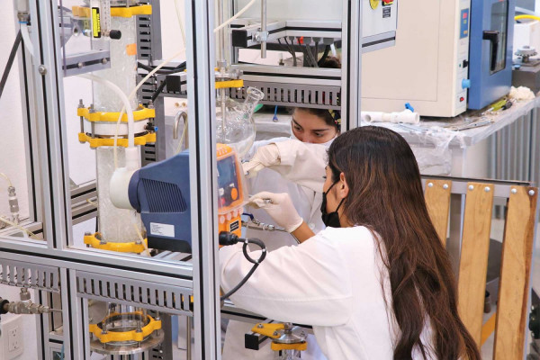

Ingenieria mecatronica
Crea, innova y aplica conocimientos en la automatización
de procesos productivos, mediante la sinergia de la mecánica de precisión, el control
inteligente, la electrónica y software.
Manejando las ramas de:
✔️Mecanica
✔️Control
✔️Computacion
✔️Electronica
Aplicacion:
💻 también abarca muchas disciplinas a la hora de su aplicación.
💻 Armonizar la relación entre componentes electrónicos y mecánicos.
Crear productos.
💻 Automatizar procesos con el fin de hacerlos ágiles, fiables y productivos.
VIDEO UPT
Ingenierias
Ing.Financiera
Evalúa proyectos, planes de negocios, modelos financieros, proyecciones de precios, ideas de mejora, implementa procesos de reclutamiento Capital Humano, entre otras. .
Ing.Sistemas automotrices

Adquirir conocimientos, actitudes, habilidades y destrezas para realizar actividades de diseño, construcción, ensamble, operación y administración de sistemas mecánicos, eléctricos y electrónicos.
Ing.Quimica

prende a diseñar, operar y comercializar productos y procesos sustentables para la industria química, energética, de materiales, de bioprocesos, petroquímica, entre otra ramas de esta.
Ing.Industrial
Estudia con profesionales certificados en: metodologías orientadas al desarrollo de competencias para la mejorara procesos.
Ing.Biotecnologia
Vive experiencias formativas en laboratorios especializados, donde podrás manipular microorganismos para la obtención de productos.
Ing.Tecnologias de la informacion

Negocios Inteligentes, CISCO, Mac y Open Source aprende a desarrollar software, instalar redes, programar, diseñar, usar sistemas operativos.
- ✔️ Mision: En la universidad Politecnica de Tlaxcala formamos profesionales competentes e innovadores, con calidad humana y capacidad de resolver necesidades sociales, mediante la aplicacion de su modelo educativo que contribulle al desarrollo tecnologico.
- ✔️ Vision: Reconocida por la pertinencia y acreditacion de sus programas por sus lineas de investigacion aplicadas, cuerpos academicos consolidados y alianzas entratagicas de alcance internacional para el desarrollo tecnologico en su forma sustentable.
- ✔️ Politica de calidad: En la Universidad Politécnica de Tlaxcala formamos profesionistas competentes, bajo un Sistema de Gestión de Calidad enfocado en la generación de valor a través de procesos innovadores y una educación integral, congruente con el cumplimiento de las expectativas de los estudiantes y partes interesadas, así como del desarrollo tecnológico, empresarial, social y sustentable del entorno, en apego al cumplimiento de las normas aplicables.
- ✔️ Valores: Calidad, cooperación, honestidad, responsabilidad, compromiso, disciplina, respeto, armonía.